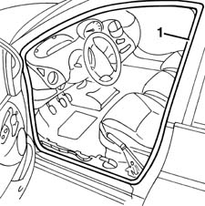

7005A34 front side door compartment seal r r
- Path
- Procedures > 70 FITTINGS > 7005 PASSENGER COMPARTMENT FRONT SIDE DOORS > 7005A front side door assembly > 7005A34 front side door compartment seal r r
- Kind
- repair procedure (removal / refitting; the operation number is the code)
- Applies to
- all engines; all production periods
- Interactive page
- https://sloeber94.github.io/elrnDB-fMltpl/en/#/2892013
Applies to: all engines; all production periods
 Removing
Removing
 Refitting
Refitting3380A44 handbrake/linkage protection - r+r , (driver's side only)
7040L40 REAR COMPARTMENT SCUFF STRIP - R R
1. Prise up the seal from its seat.

Applies to: all engines; all production periods
Refitting
RemovingCheck that the seal is intact and undamaged.
Fit the seal in its seat.
7040L40 REAR COMPARTMENT SCUFF STRIP - R R
3380A44 handbrake/linkage protection - r+r , (driver's side only)